A system at temperature $T$ is found in a state of energy
$E$ with probability proportional to $e^{-E/k_BT}$.
The Metropolis rule moves the system from
state to state. A move that lowers the energy is always
made, and a move that raises it by $\Delta E$ is made with
probability $e^{-\Delta E/k_BT}$.
We applied it to the Ising model, where a
move flips one spin.
Today we go back to the rule and ask
where it comes from, on systems simple enough that we know how
they behave.
Part I · More examples of the Metropolis rule
Two energy levels, a harmonic well, and a double well
Two energy levels
A system has a ground state with energy $0$ and an
excited state with energy $\varepsilon$. It is in contact
with a heat bath at temperature $T$, and the Boltzmann
distribution gives
$$ \frac{P_e}{P_g} = e^{-\varepsilon/k_BT} . $$
When $k_BT \ll \varepsilon$ the
system sits in the ground state.
As the temperature rises it is found
in the excited state more often, and never more than
half of the time.
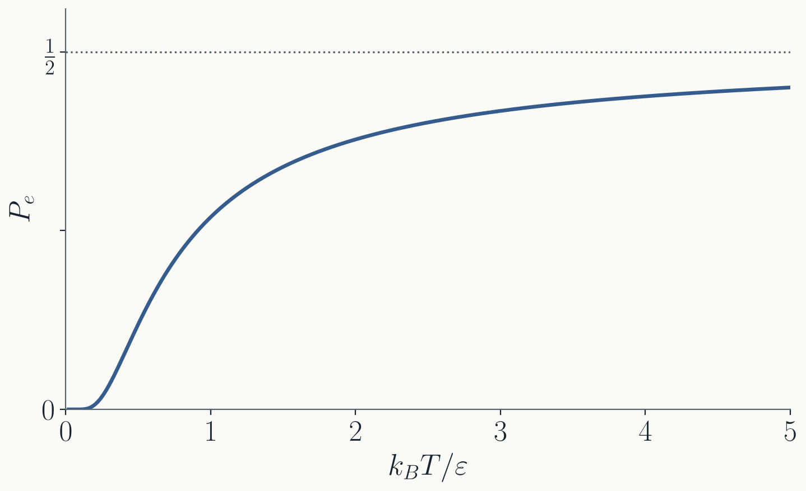
A hopping rule
We want the computer to imitate this system. It should hop
between the two states and spend the right fraction of its
steps in each.
At every step, a system in the ground
state hops up with probability $a_\uparrow$.
A system in the excited state hops down
with probability $a_\downarrow$.
Otherwise the system stays where it is
for another step.
Which values of $a_\uparrow$ and
$a_\downarrow$ reproduce the Boltzmann distribution?
The condition on the rule
The hops alternate, up and then down, so a long run has
equally many of each. If the run spends $N_g$ steps in the
ground state and $N_e$ in the excited state,
A hop up must be rarer than a hop down
by the Boltzmann factor. The bath has to supply the energy
$\varepsilon$ for a hop up, and a cold bath rarely does.
The Metropolis choice
The condition fixes only the ratio. The run is fastest with
the largest probabilities that the ratio allows:
A move down is always made, and a move up
is made with probability $e^{-\varepsilon/k_BT}$.
When a move up is refused, the system
spends one more step in the ground state. Those extra steps
give the ground state its larger share.
Check, and the general rule
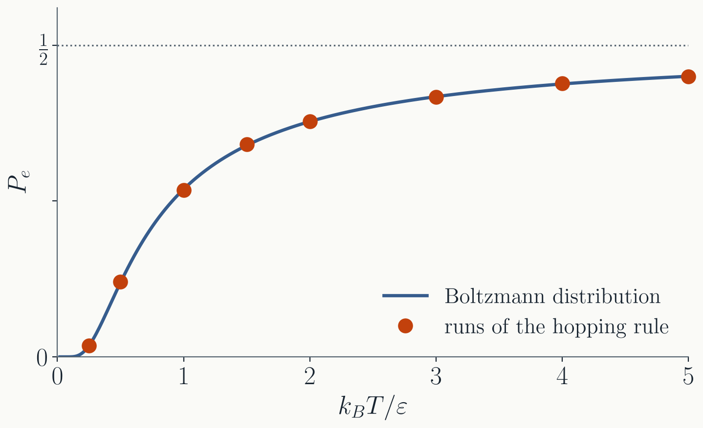
Each point is the fraction of steps that one run of the rule
spent in the excited state.
With many states the same condition applies
to every pair of states. A move that lowers the energy is
always made, and a move that raises it by $\Delta E$ is made
with probability $e^{-\Delta E/k_BT}$.
States and energies
The Boltzmann distribution is the probability of finding the
system in a given state, not the probability of finding the
system with a given energy. Many different states can have the
same energy.
Take $50$ two-level systems together, at
$k_BT = \varepsilon$. Their total energy $E$ is $\varepsilon$
times the number of systems that are excited. The plot shows
the probability of each value of $E$.
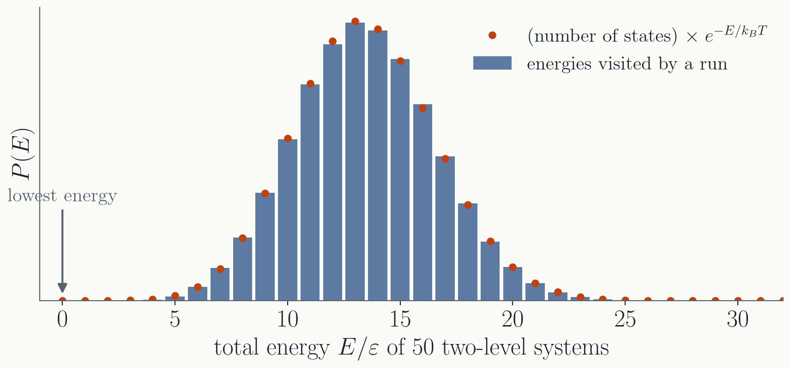
All systems in the ground state is the
most likely single state, but it is the only state with
$E = 0$.
The probability of an energy is the
Boltzmann factor times the number of states with that
energy, so $P(E)$ peaks where many states share the same
energy.
A particle in a harmonic well
The state is now a position $x$, with energy $E(x) =
\tfrac{1}{2}\kappa x^2$. The Boltzmann distribution is
$$ P(x) \propto e^{-\kappa x^2/2k_BT} . $$
A cold particle sits at the bottom of
the well.
A warmer particle is spread over a
width $\sigma = \sqrt{k_BT/\kappa}$, which grows with
the temperature.
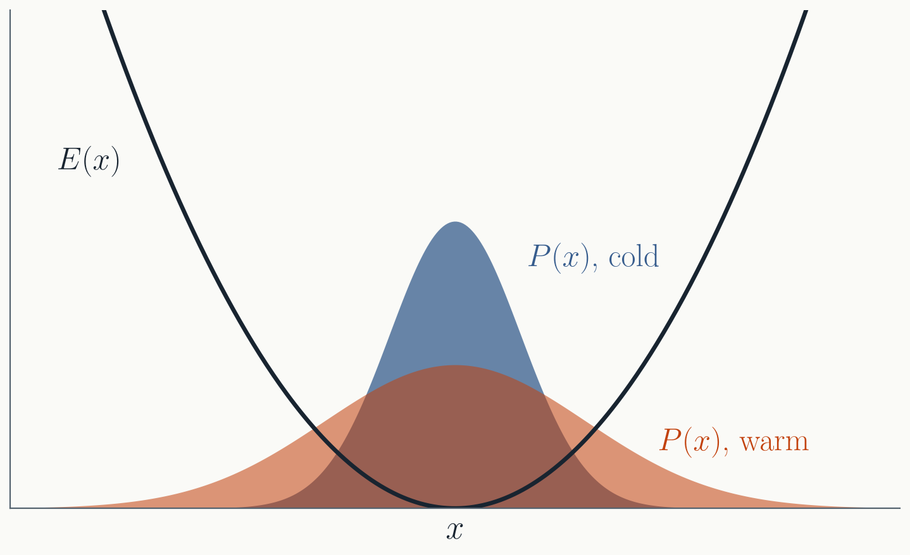
The moves
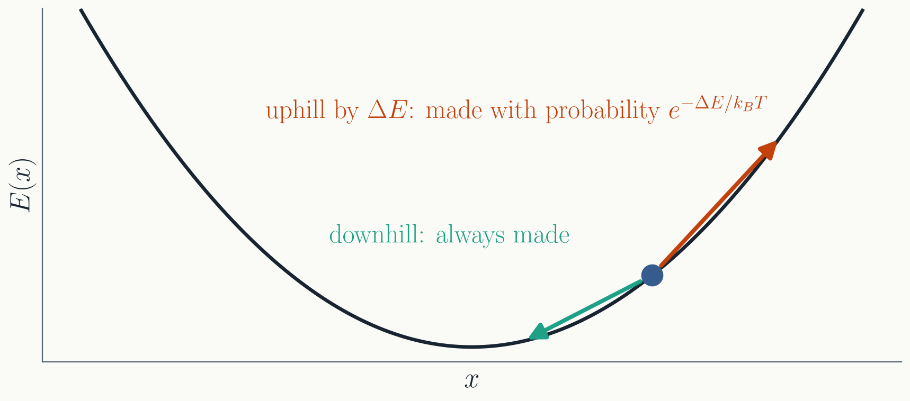
A move is a small random step, $x' = x + \delta$, with
$\delta$ drawn from a Gaussian of width $w$.
A step toward the bottom lowers the energy
and is always made. A step away from it is made with
probability $e^{-\Delta E/k_BT}$.
The positions visited are not the motion
of the particle in time. Only how often each position
appears has a meaning.
Burn-in
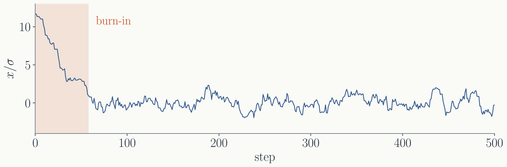
A run takes some number of steps to reach thermal
equilibrium. The positions before that are unreliable and
are discarded.
Outside of statistical physics, this
initial period is called burn-in.
It is hard to predict how long the
burn-in will be, so it is crucial to look at the results to
determine whether equilibrium has been reached.
Check
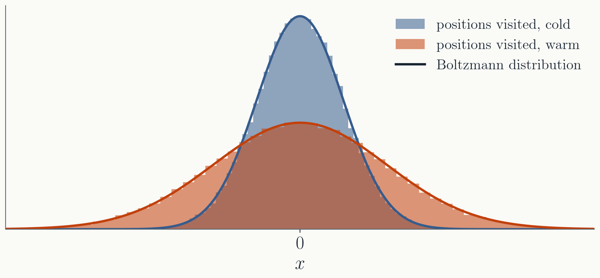
The histogram of the positions visited matches the Boltzmann
distribution at both temperatures.
The rule did not use the formula for a
Gaussian. Each step compared the energies of two
positions.
A double well
Change the energy to one with two wells of different
depth, separated by a barrier.
A hot particle is found in both
wells, somewhat more often in the deep one.
A cold particle is found almost
always in the deep well.
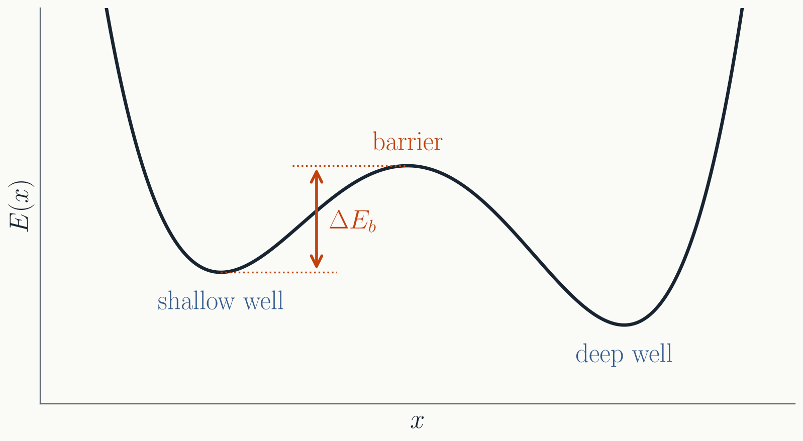
Hot and cold runs
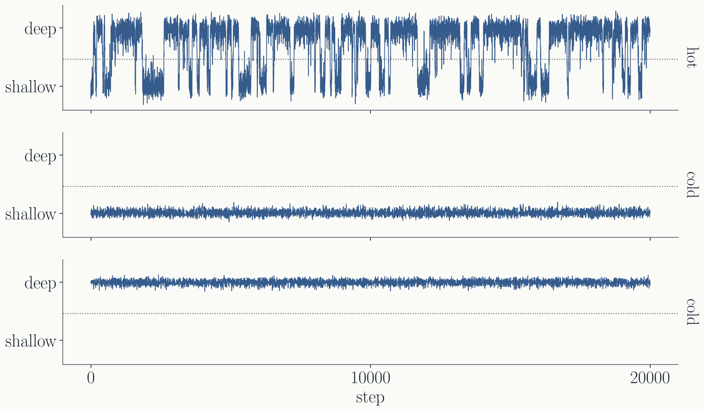
The hot run crosses the barrier often and spends more of its steps in the deep well, as it should.
Each cold run stays in the well where it started, so the two give different answers for the same system.
Why the cold run fails
To change wells the particle has to climb the barrier, which takes many uphill moves in a row.
The chance of that is about $e^{-\Delta
E_b/k_BT}$, which is tiny when $k_BT \ll \Delta E_b$.
The rule is still correct, and an
infinitely long run would give the right answer. A run of
practical length stays in the well where it started.
The output does not show the problem. To
detect it, start several runs from different places and
compare them.
Part II · Simulated annealing
Minimization by slow cooling
A new goal
Suppose we do not want the distribution at all. We want the
state of lowest energy.
As $T \to 0$ the Boltzmann distribution
puts the system in its lowest state, so a very cold run
should find it.
A cold run slides down into the nearest
well and stays there, whether or not it is the deepest.
A hot run crosses every barrier, and it
never settles anywhere.
Annealing
That a rapidly cooled system can get stuck in a local energy
minimum is a fact known for centuriesby blacksmiths and glassworkers!
The common strategy to mitigate this effect
is to heat the object to high temperatures and let it cool
down slowly. This process is called annealing, which
can remove internal stresses and help avoid forming defects
in the final product.
Simulated annealing
Do the same in the simulation. Start hot, and lower the temperature slowly during the run,
for example $T_n = T_0\, e^{-n/\tau}$.
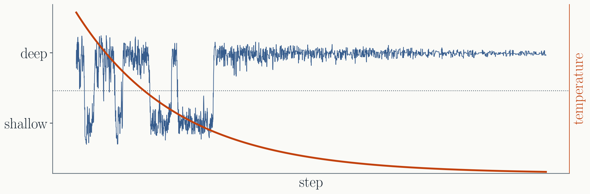
While it is hot the particle crosses the
barrier freely and spends more time in the deep well.
When the crossings stop it is most likely
to be in the deep well, and it then settles to the
bottom.
The cooling time
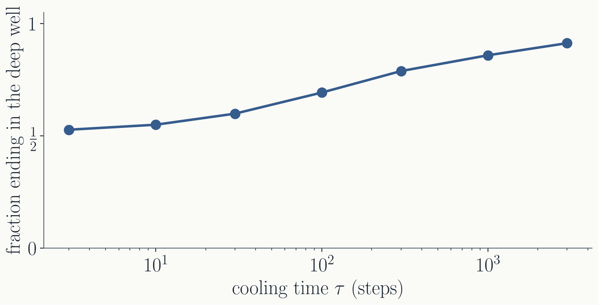
Many runs start at random positions and are cooled at different rates.
After a fast cooling about half of them are in each well, wherever they happened to start.
A slow cooling brings most of them to the
deep well, but no cooling time makes the result
certain.
The traveling salesman
Given $N$ cities, find the shortest round trip that visits
each of them once.
There are $(N-1)!/2$ different tours, far
too many to try.
The length of the tour plays the role of
the energy. It is not a physical energy, and the method
does not need it to be.
The temperature is then a number we
choose and lower, with the units of a length.
A move for tours
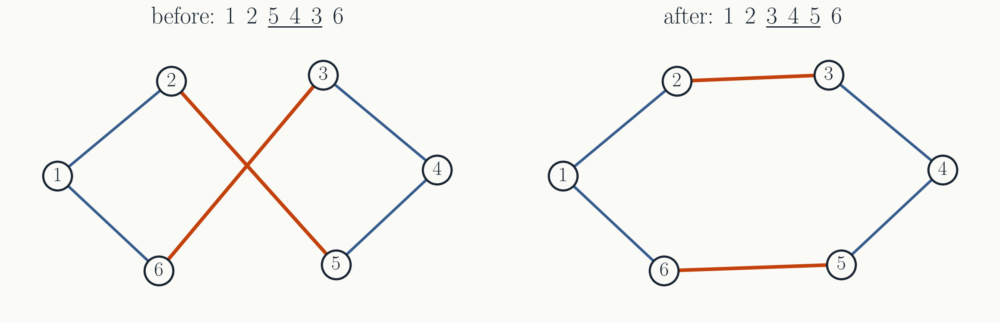
The state is the order in which the cities are visited. A
move reverses a stretch of that order.
Only two legs of the tour change, so the
change in length $\Delta L$ is quick to compute.
The move is made if $\Delta L \le 0$, and
with probability $e^{-\Delta L/T}$ otherwise.
Result for 100 cities
Both runs start from the same random tour. Making downhill
moves only stops quickly at a tour that no single move can
shorten. The annealed tour ends about a tenth shorter.
Summary
For two levels, the hops up and down balance over a long
run, and that fixes the ratio of the two hopping
probabilities to be the Boltzmann factor. The Metropolis
rule is the fastest choice with that ratio.
The same rule with a small random step
reproduces the Boltzmann distribution of a particle in a
well. A run needs a burn-in, and at low temperature it can stay trapped behind a barrier.
Simulated annealing starts hot and cools
slowly to find a deep minimum, and it works for any cost
that can be computed, such as the length of a tour.